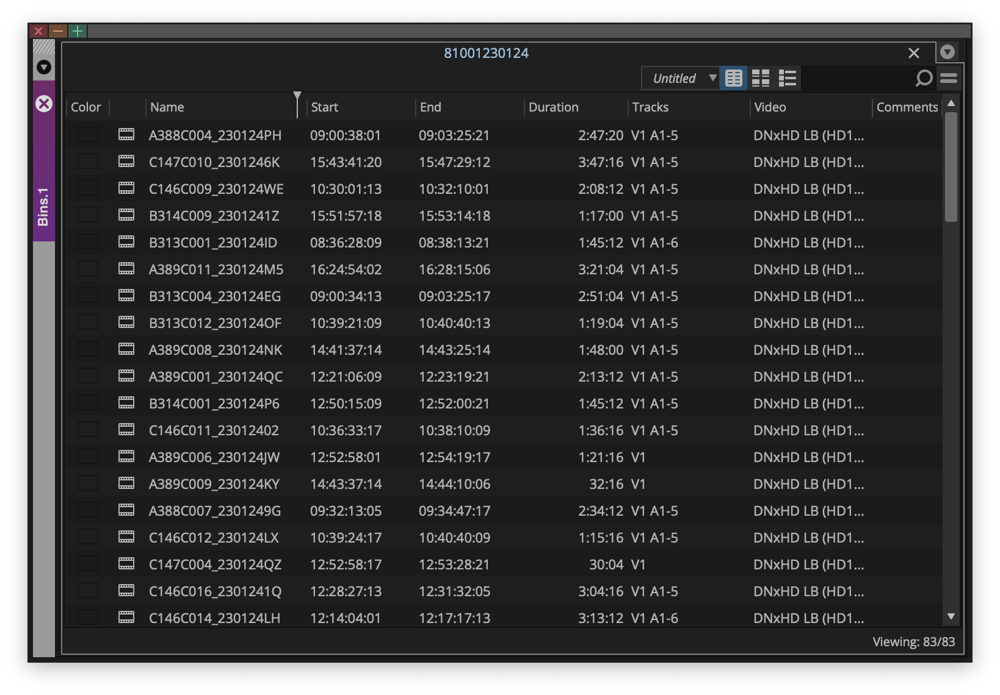
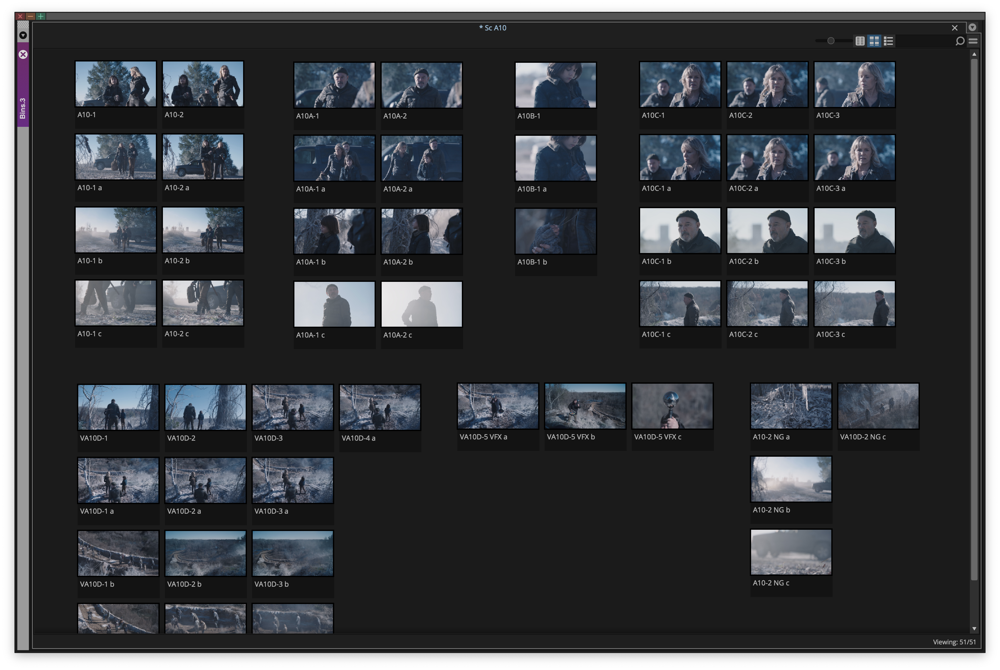

Josh Hunt - Project Case Study
**Project Title:** Streamlining Media Management (Brockmire Season 2)
**Role:** Assistant Editor
**Company/Client:** Funny or Die / IFC
**Dates:** September 2017 - December 2017
**Project Type:** Television Series
1. Project Overview & Context
Summary: For Brockmire Season 2, a 10-episode television series, production was optimized by shooting all content as if it were a single four-hour movie. This approach maximized the value of each location before moving on, creating a complex and high-volume media management challenge.
Overall Contribution: My role was critical in ensuring the seamless flow and meticulous organization of all incoming dailies. I established and maintained a rigorous media management workflow, guaranteeing data integrity and significantly streamlining the post-production process for the editorial team.
View the Trailer: For a glimpse into the series' style, you can watch the Brockmire Season 2 Trailer on YouTube.
2. My Role
Specific Responsibilities:
- Received daily media via IBM Aspera, typically consisting of a folder with media files and an Avid bin.
- Copied all incoming media files onto the internal server, ensuring secure and efficient data transfer.
- Established and maintained a clear, concise folder structure within the editing suite (e.g., Cuts, Scenes, Dailies, Outputs, Stock, VFX, zAssist) for optimal organization and quick asset retrieval.
- Ensured all media file folders at the finder level were precisely named to match the date and shooting day the clips were recorded, facilitating efficient media management and retrieval.
- Opened Avid bins and meticulously cross-referenced every media clip with recorded notes from the camera department, audio department, and script supervisor to ensure nothing was missing.
- Created organized groups of clips for multi-camera setups, enhancing editor efficiency.
- Scanned through each take to identify where action was called, adding precise markers to save time for the editor during assembly.
- Copied each clip or group into separate bins, corresponding to its labeled scene.
- Marked an in-point on each take and changed the view to thumbnails, allowing for quick visual identification of the main focus of each clip.
- Organized all takes within bins in chronological order according to the record on the slate.
- Categorized all extraneous elements into a dedicated b-roll bin or marked them as unusable, maintaining a clean and focused workflow.
- Prepared and passed off meticulously organized bins to the editor for final assembly.
Disclaimer: While this case study primarily references my work on *Brockmire* Season 2, I do not have access to dailies from that specific production due to confidentiality agreements. The images below are examples from *Fear The Walking Dead* and are used solely to illustrate the type of media organization and workflow described.

A raw dailies bin from Fear The Walking Dead.
3. Process & Challenges
Workflow Description: My process was a systematic daily routine of ingesting, verifying, organizing, and preparing raw media for editorial. While appearing simple once mastered, it demanded extreme care and organization to prevent costly errors down the line.
Challenges Faced:
- Challenge 1: High Volume & Data Integrity: Managing a continuous stream of dailies from a "movie-style" shoot for a television series, requiring absolute precision to ensure no media or metadata was lost or misfiled.
- Solution: Implemented a rigorous cross-referencing protocol with all production notes and a methodical bin organization system within Avid, creating multiple checkpoints for data verification.
- Challenge 2: Optimizing Editor Efficiency: The need to significantly reduce the time editors spent searching for and preparing footage, allowing them to focus on creative assembly.
- Solution: Developed efficient practices like multi-camera grouping, adding "action" markers, and thumbnail-based organization, which provided editors with pre-sorted, easily navigable media.
- Challenge 3: Adapting to Production Style: Adjusting media management strategies to accommodate a non-linear, "movie-style" shooting approach for a serialized television format.
- Solution: Maintained a flexible and adaptable organizational structure that could handle large, consolidated media dumps and then break them down into episode/scene-specific assets effectively.

An organized dailies bin from Fear The Walking Dead.
4. Impact & Outcome
Key Results:
- Ensured 100% data integrity and accountability for all incoming dailies throughout the production of Brockmire Season 2.
- Significantly streamlined the editorial workflow by delivering meticulously organized and pre-prepped media bins, allowing editors to focus more on creative decisions.
- Prevented potential costly delays and errors by proactively identifying and resolving media discrepancies before they impacted the post-production pipeline.
- Contributed to the efficient and timely delivery of all 10 episodes by maintaining a robust and reliable media management system.
Overall Learning/Growth: This project profoundly deepened my expertise in large-scale media asset management, data integrity protocols, and the critical role of meticulous organization in high-volume, fast-paced television post-production environments. My team was working without a Post Production Assistant and we had to think several steps ahead to prepare available elements for delivery before their scheduled dates. It reinforced the importance of proactive problem-solving and attention to detail in maintaining a smooth workflow.